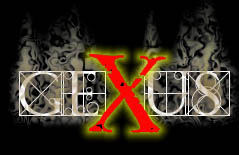

y si, otra vez estoy aburrido.. pero los que me conocen, saben que no soy de cambiar paginas porque si, pero bue, no tengo suenio y no me tengo que despertar temprano..
Si quieren ver la pagina principal apreten ACA
SIL, SUPONGO QUE CUANDO LEAS ESTO YA VAS A SABER LA NOTA Y VAS A ESTAR MEJOR.
ESPERO QUE TE AYA IDO BIEN SINO VAS A ESTAR INVANCABLE... JE
Y YA SABES, SIEMPRE QUE QUIERAS HABLAR SABES DONDE LLAMAR.